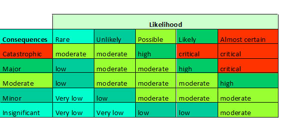
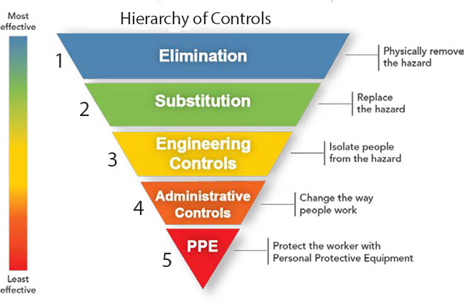

What is risk assessment?
A risk assessment is simply a careful examination of what, in your work, could cause harm to people, so that you can weigh up whether you have taken enough precautions or should do more to prevent harm. Workers and others have a right to be protected from harm caused by a failure to take reasonable control measures.
How to assess the risks in your workplace
Follow the five steps in this leaflet:
Step 1 Identify the hazards
Step 2 Decide who might be harmed and how
Step 3 Evaluate the risks and decide on precautions
Step 4 Record your findings and implement them
Step 5 Review your assessment and update if necessary
If a risks is well known then necessary control measures are easy to apply. For example, an worker who move heavy loads and could harm his back, or where he is likely to slip or trip. If so, check that you have taken reasonable precautions to avoid injury.
If you are not confident, get help from someone who is competent.
Usually construction firms will have useful information about how the work is done and that will make your assessment of the risk more thorough and effective.
When thinking about your risk assessment, remember:
a hazard is anything that may cause harm,
the risk is the chance, high or low, that somebody could be harmed
Step 1 Identify the hazards
First you need to work out how workers could be harmed. When you work on a construction site it’s easy to overlook some hazards, so here are some tips to help you identify the ones that matter:
- walk around your workplace and look at what could reasonably be expected to cause harm.
- ask your employees or their
representatives what they think. They may have noticed things that are not immediately obvious to you.
- remember to think about long-term hazards to health (eg high levels of noise or exposure to harmful substances) as well as safety hazards.
Step 2 Decide who might be harmed and how
For each hazard you need to be clear about who might be harmed; it will help you identify the best way of managing the risk.
Remember:
some workers have particular requirements, eg new and young workers, and people with disabilities may be at particular risk.
Extra thought will be needed for some hazards;
- visitors, contractors, workers etc, who may not be on site all the time;
- think about how the affect on work others present on site,
- talk to them, and ask if they can think of anyone you may have missed.
Step 3 Evaluate the risks and decide on precautions
Having spotted the hazards, you then have to decide what to do about them. The law requires you to do everything ‘reasonably practicable’ to protect people from harm.
So first, look at what you’re already doing, think about what controls you have in place and how the work is organised. Then compare this with the good practice and see if there’s more you should be doing. In asking yourself this, consider:
Can I get rid of the hazard altogether? If not, how can I control the risks so that harm is unlikely? When controlling risks, apply the principles below, if possible in the following order:
- try a less risky option (eg using less hazardous chemical);
- organise work to reduce exposure to the hazard (eg put barriers between pedestrians and traffic);
- issue personal protective equipment (eg clothing, footwear, goggles etc);
- provide welfare facilities (eg first aid and washing facilities).
Failure to take simple precautions can cost you a lot more if an accident does happen.
Step 4 Record your findings and implement them
Putting the results of your risk assessment into practice will make a difference when looking after workers and the building site.
Writing down the results of your risk assessment but keep it simple, for example ‘Tripping over rubbish: bins provided, staff instructed, weekly housekeeping checks’.
5 steps for determining appropriate risk control measures
- . Assess the likelihood of the risk associated with the hazard causing injury or illness: Is an accident or incident likely to result from the risk?
- Investigate the degree of harm that would result if the hazard or risk of the hazard eventuated: Would an accident or incident result in serious harm or even death?
- Ask what the relevant workers know about the hazard or risk, and any ways of eliminating or reducing the hazard or risk: Have you gathered information about the risk and possible ways of reducing or eliminating it?
- Evaluate the availability a
- nd suitability of ways to eliminate or reduce the hazard or risk: Are appropriate remedial measures available on the market, or could they be manufactured or designed? Is there a different work process that could be adopted? (Use the hierarchy of control for this.)
- Balance the factors above with the cost of eliminating or reducing the hazard or risk.
If a risk is not foreseeable, it will generally not be reasonably practicable to control it. However, the duty to provide a safe workplace is a strict one!
Risk Assessment
It is then necessary to evaluate the likelihood of an injury occurring, along with its probable consequences. Risk assessments are therefore based on two key factors:
- the likely severity or impact of any injury or illness resulting from the hazard, and
- the probability or likelihood that the injury or illness will actually occur.
A simple risk matrix, which cross references likelihood and impact, enables risk to be assessed against these two factors and identified as one of the following:
- a critical risk
- a high risk
- a moderate risk
- a low risk
- a very low risk.
Rating Matrix

Risk Control Hierarchy
If a risk is foreseeable, you must eliminate it, or if that is not possible, you need to minimise it as much as possible.
| 1 |
Elimination of the hazard |
Examples include the proper disposal of redundant items of equipment that contain substances such as asbestos, or PCBs, the removal of excess quantities of chemicals accumulated over time in a laboratory, etc.
The elimination of a hazard is a 100% effective control measure. |
| 2 |
Substitution of the hazard |
Examples include the replacement of solvent-based printing inks with water-based ones, of asbestos insulation or fire-proofing with synthetic fibres or rockwool, the use of titanium dioxide white pigment instead of lead white, etc.
The effectiveness of this form of control is wholly dependent on the choice of replacement.
|
| 3 |
Engineering Controls |
Examples include the installation of machine guards on hazardous equipment, the provision of local exhaust ventilation over a process area releasing noxious fumes, fitting a muffler on a noisy exhaust pipe, etc.
The effectiveness of engineering controls is generally around 70-90%.
|
| 4 |
Administrative Controls |
Examples include training and education, job ation to share the load created by a demanding task or tasks, planning, scheduling certain jobs outside normal working hours to reduce general exposure (e.g. planning demolition and building works during summer recess), early reporting of signs and symptoms, instructions and warnings, etc.
The effectiveness of administrative controls generally ranges from 10-50%. they typically require significant resources to be maintained over long periods of time for continuing levels of effectiveness. They are also generally highly dependent on worker behaviour.rot
|
| 5 |
Personal Protective Equipment (PPE) |
Examples include safety glasses and goggles, earmuffs and earplugs, hard hats, toe capped footwear, gloves, respiratory protection, aprons, etc.
Their effectiveness generally does not exceed 20%. |

This topic is covered in much greater depth in the
WorkSafe ACT website.
Click here if you want to access this website |